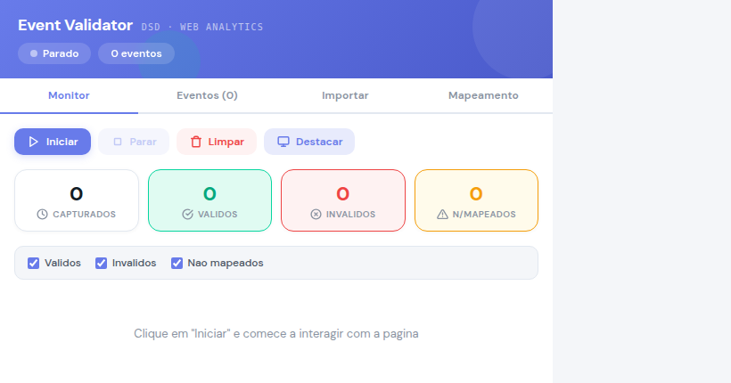
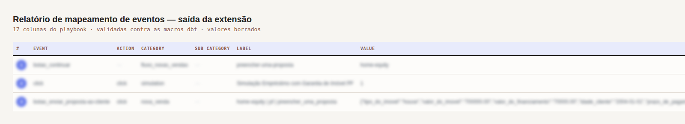

Product analytics · Chrome extension
Event Validator — a Chrome tool that maps and checks product events
Map a flow by clicking through it, and get a report the developers can act on.
The problem
Event tagging was done by hand. Each person named events their own way, the report was assembled in a spreadsheet, and a wrong field only surfaced weeks later, in the warehouse.
What I built
A Chrome extension (manifest v3) that listens to the dataLayer inside the page: right-click marks an element with a numbered badge, left-click captures the event without navigating, a second right-click runs it for real. At the end it generates the HTML report that goes to the developers. Next to it, an agent reads that report and checks every event against the tagging playbook and the dbt macros, returning the corrected events as JSON to paste straight back into the extension. One rule above all: the interceptor runs inside the live page, so it can never break the site being mapped.
Result
Nine product flows mapped against the same 17-column standard, and what breaks the playbook is caught before it reaches the warehouse — not weeks after.
Screens
The tool on an empty state, and the report with every value blurred. The capture screens that carry customer data are left out entirely.


Stack
- JavaScript
- Chrome Extension (MV3)
- dataLayer
- Python
- dbt
- LLM agent